Learning good representations is essential for latent planning with world models. While pretrained visual encoders produce strong semantic visual features, they are not tailored to planning and contain information irrelevant -- or even detrimental -- to planning. Inspired by the perceptual straightening hypothesis in human visual processing, we introduce temporal straightening to improve representation learning for latent planning. Using a curvature regularizer that encourages locally straightened latent trajectories, we jointly learn an encoder and a predictor. We show that reducing curvature this way makes the Euclidean distance in latent space a better proxy for the geodesic distance and improves the conditioning of the planning objective. We demonstrate empirically that temporal straightening makes gradient-based planning more stable and yields significantly higher success rates across a suite of goal-reaching tasks.
Inspired by the perceptual straightening hypothesis in human vision, which posits that visual systems transform complex videos into straighter internal representations, we introduce a simple approach to straighten latent trajectories for planning. Concretely, we jointly learn an encoder and a predictor of a world model, while imposing regularization on the curvature of latent trajectories during training. The training objective is:
Lpred = || ẑt+1 - sg(zt+1) ||22
Lcurv = 1 - C, where C = cos(zt+1 - zt, zt+2 - zt+1)
Ltotal = Lpred + λLcurv
Here, sg denotes stop-gradient and λ controls the strength of the straightening.
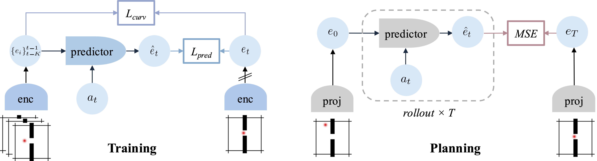
We inspect the learned embedding space by measuring latent trajectory curvatures, PCA projections of latent trajectories, and latent Euclidean distances to understand the impact of straightening.
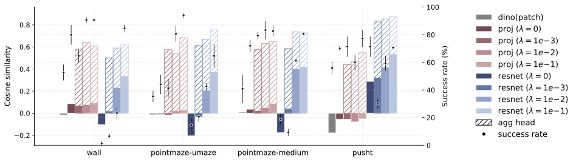
We visualize the Euclidean distance between the embedding of a target state (denoted by the star) and all other states in the maze. Blue indicates smaller distance, and red indicates larger distance.
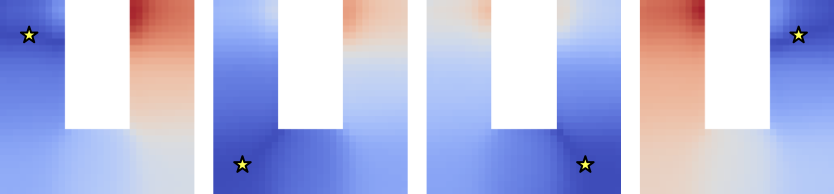
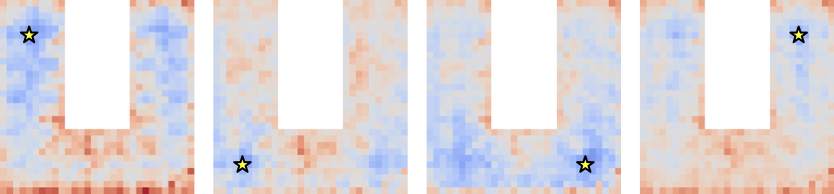
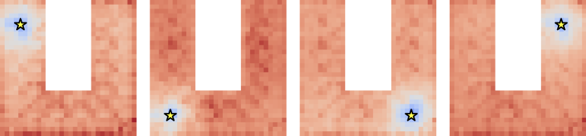
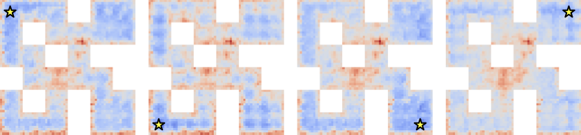
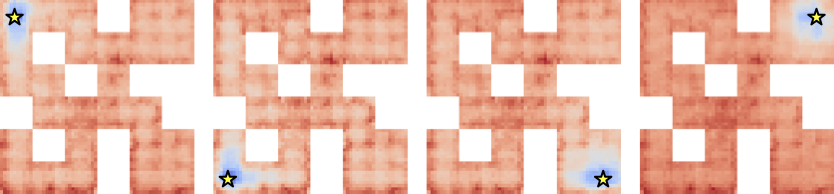
We also visualize the learned trajectory representations using PCA. While latent trajectories are highly curved in the pretrained embedding space, they become significantly smoother after straightening, and Euclidean distance becomes a more faithful proxy for geodesic progress toward the goal.
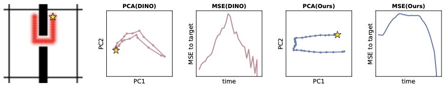
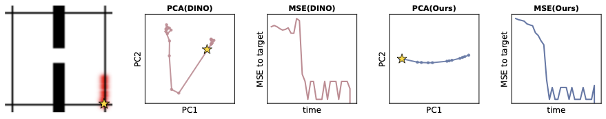
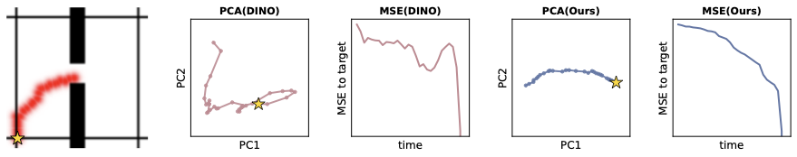
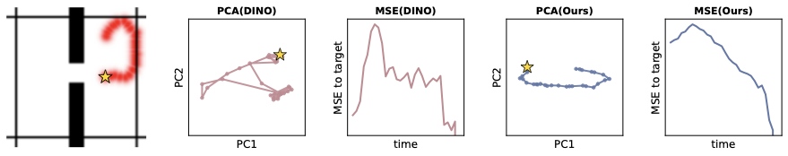
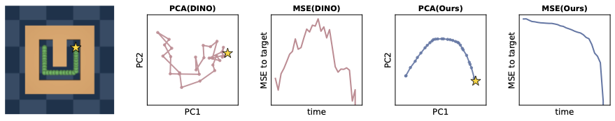
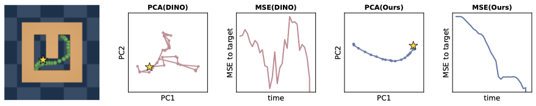
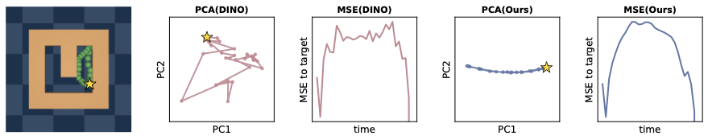
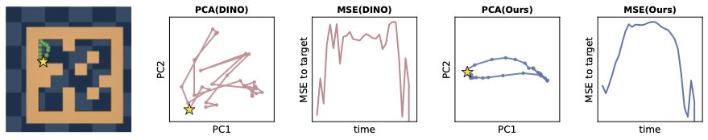
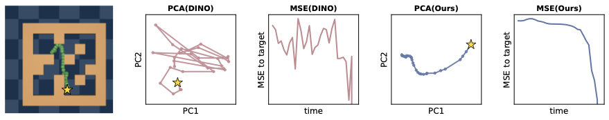
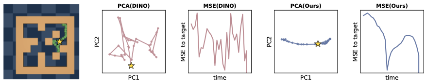
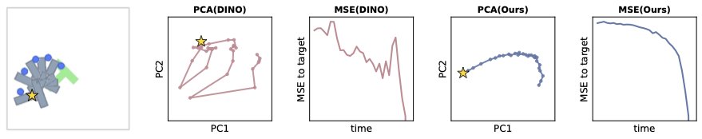
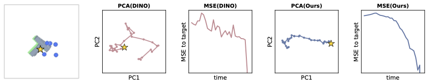
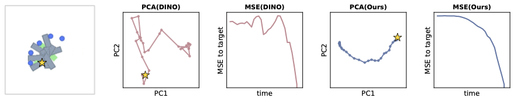
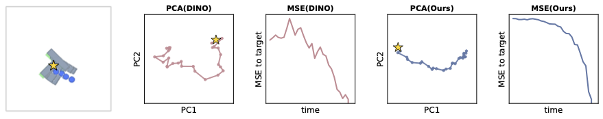
We perform gradient-based planning using our models on four environments: Wall, PointMaze-UMaze, PointMaze-Medium, and PushT. We report both open-loop planning and closed-loop MPC. Open-loop planning optimizes a length-H action sequence using the terminal embedding distance to the target, while MPC executes the first action and replans at every step. Across environments, temporal straightening substantially improves planning performance.
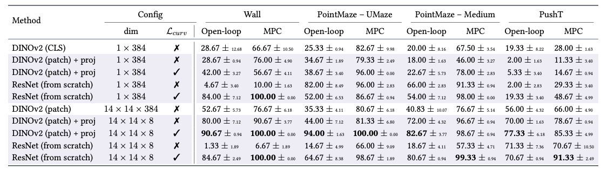
Closed-loop MPC replans at every step. The success-rate curves below show that straightening reaches high MPC success quickly, especially on Wall and UMaze.
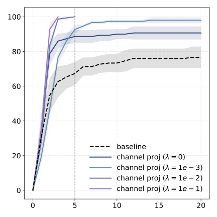
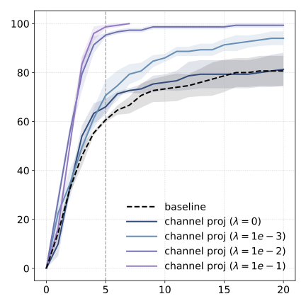
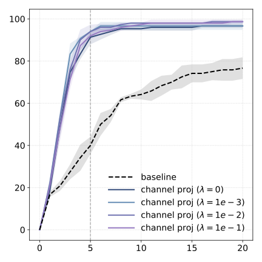
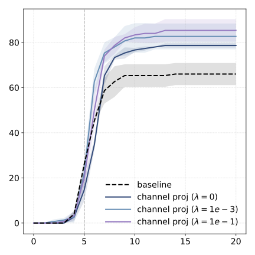
Below are examples of open-loop planning across the four environments.
@article{wang2026temporal_straightening,
title={Temporal Straightening for Latent Planning},
author={Wang, Ying and Bounou, Oumayma and Zhou, Gaoyue and Balestriero, Randall and Rudner, Tim GJ and LeCun, Yann and Ren, Mengye},
journal={arXiv preprint arXiv:2603.12231},
year={2026}
}